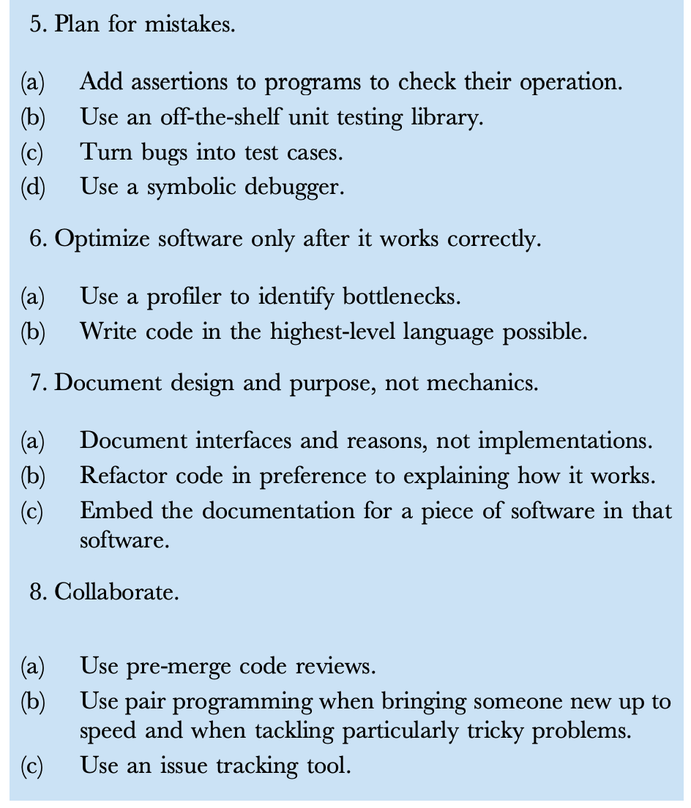
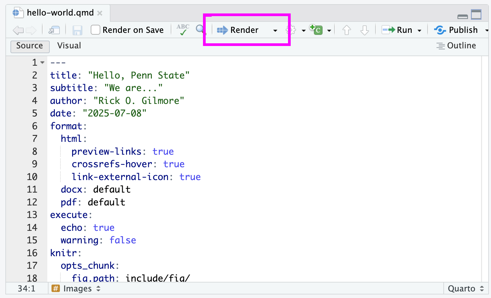

flowchart LR
A(["Idea"]) --> B["Proposal"]
B --> C("Project_1")
B --> D("Project_2")
C --> E["IRB_protocol"]
D --> E
C --> F["Lab_protocol"]
D --> F
C --> G["Data_pipeline_1"]
D --> H["Data_pipeline_2"]
B --> I["Conference_presentation"]
F --> I
G --> I
C --> I
I --> J["Journal_manuscript"]
H --> K["Lab_mtg_report"]
K --> J
F --> J
Quarto: A tool for open scholarship
Part I
Rick Gilmore
Preliminaries
Follow-along
Figure 1: https://penn-state-open-science.github.io/bootcamp-2025-quarto-I/
Agenda
- Motivation
- Installing the tools
- Case study
- Under the hood
Motivation
Documents have many parts…
flowchart LR
A("Data") --> B["Data_pipeline"]
B --> C("Figure_1")
B --> D("Figure_2")
B --> E("Table_1")
F("Text") --> G["Document"]
H("References") --> G
C --> G
D --> G
E --> G
Challenges
“I just found a typo in our data file. We need to re-run all of the analyses and regenerate all of the stats, figures, and tables ASAP. The submission deadline is tomorrow!”
“Can we make the typefaces and axes the same in Figures 1 and 2? The submission deadline is tomorrow!”
“We need to submit our grant progress report by tomorrow!”
More challenges
- Reducing duplication of effort
- Re-using our own hard work
- Making our own work reproducible1…
- & transparent2
Solution
- DRY WIT
- Don’t Repeat Yourself
- Write It Down


Computational notebooks
- Automate as much as possible
- Re-use text, code, figures

Wilson et al. (2014)

Installing the tools
Install R
Install RStudio
Install Quarto
Launch RStudio
Case studies
Template repository
- Hosted on GitHub
- Sample files for you to explore
- Hello World
- Slides
https://github.com/penn-state-open-science/bootcamp-2025-quarto-I-template
In RStudio
Load the R packages
Open hello-world.qmd
Render the document
Inspect the HTML output
Edit, save, render, inspect (repeat)

Wrap-up
flowchart LR
A(["Idea"]) --> B["Proposal"]
B --> C("Project_1")
B --> D("Project_2")
C --> E["IRB_protocol"]
D --> E
C --> F["Lab_protocol"]
D --> F
C --> G["Data_pipeline_1"]
D --> H["Data_pipeline_2"]
B --> I["Conference_presentation"]
F --> I
G --> I
C --> I
I --> J["Journal_manuscript"]
H --> K["Lab_mtg_report"]
K --> J
F --> J
{kind=link}

You have the power.
FAQs
- Do I have to learn R?
- What’s wrong with X (alternative tools)?
- My adviser prefers X, what should I do?
Take homes
- Quarto \(\rightarrow\) DRY WIT
- Save time!
- Reproducible to you \(\rightarrow\) reproducible to others
- Quarto (Part II): Reproducible research reports (tomorrow 1:15p)
…If I have seen further it is by standing on the shoulders of Giants.
Newton to Robert Hooke, 1675
Resources
About
This talk was produced using Quarto, using the RStudio Integrated Development Environment (IDE), version 2025.5.1.513.
The source files are in R and R Markdown, then rendered to HTML using the revealJS framework. The HTML slides are hosted in a GitHub repo and served by GitHub pages: https://penn-state-open-science.github.io/bootcamp-2025-quarto-I/
References
Wilson, G., Aruliah, D. A., Brown, C. T., Chue Hong, N. P., Davis, M., Guy, R. T., … Wilson, P. (2014). Best practices for scientific computing. PLoS Biology, 12, e1001745. https://doi.org/10.1371/journal.pbio.1001745

Open Scholarship Bootcamp 2025 • Day 1 | © 2025 by Rick Gilmore under CC BY 4.0